ACTUAL GAME · EXISTING KIT · RETAINED BLOCKOUT
Larger forms for the Galleries and Crown
Six overlapping assemblies reuse the current tree and root kit. The Galleries now have clearer shoulder masses around the open lane; Heartroot has a larger connected rear boundary. Asset experiments remain paused.
This is a retained local improvement, not a finished habitat. The long Gallery stretch remains too open between these compositions. The next region-scale priority is a more continuous edge while keeping the route open.
All1,435 tests, verification and ZIP pass. Packaged Gallery and Crown scene IDs, positions and ground rays match the developer build.
Independent review · Plan and corrections · Validation and limits
Root Galleries
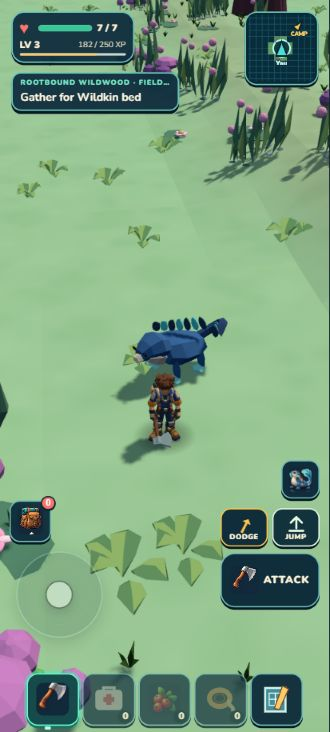
Before, normal36° camera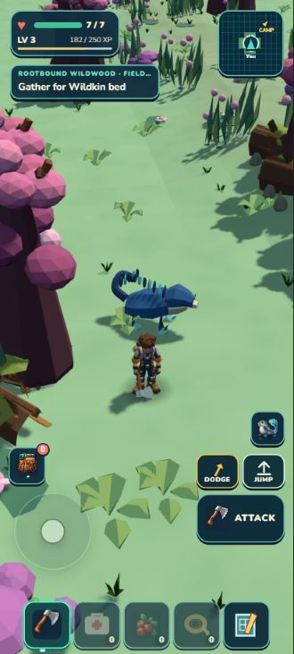
Retained enclosure, normal36° cameraHeartroot entry
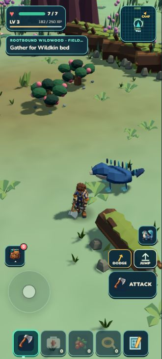
Before, normal36° camera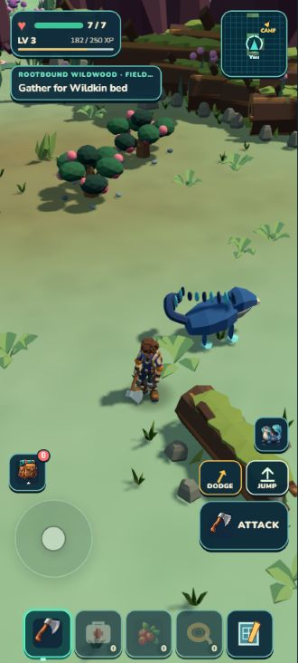
Retained enclosure, normal36° cameraApproaching the Crown
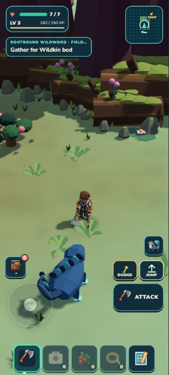
Close reveal at the default pitch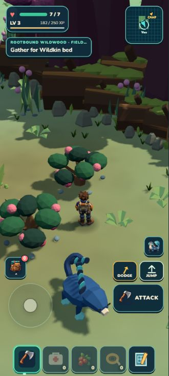
Actual normal-input approachThe large forms are rough, non-colliding visual placeholders. This pass does not add climbable trees or new harvestable parts.
Whole region
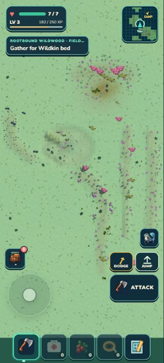
Earlier coverage passSix larger forms addedThese overhead images use a diagnostic camera with fog disabled. They expose the remaining open stretches; they are not normal gameplay views.
Additional supported viewing angle
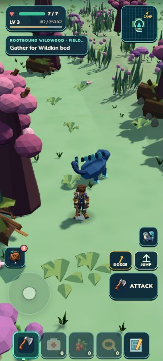
Gallery at32°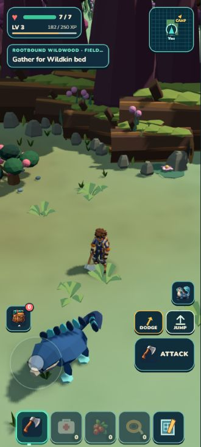
Crown reveal at32°The default camera remains unchanged. The32° view uses existing orbit controls.
Packaged game
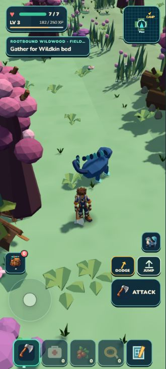
Packaged Gallery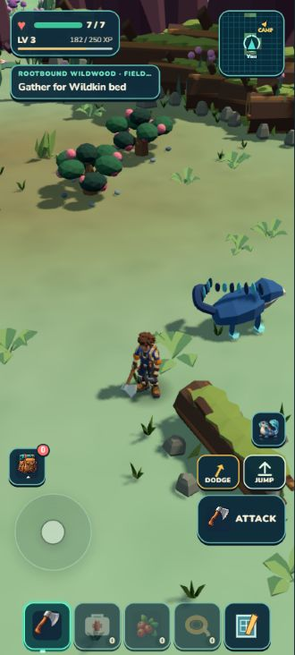
Packaged Crown entry